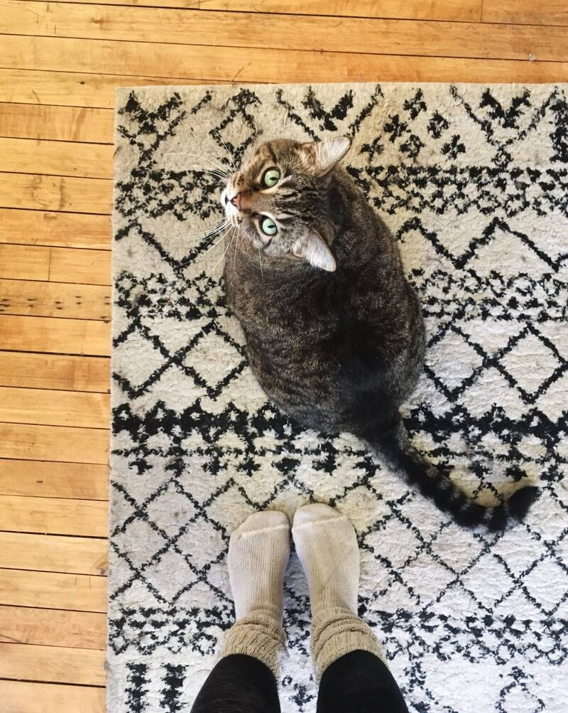

About Me
Contact
About Gojira!
~ a big boy with a heart to match ~
Homepage
About Gojira

Name: Gojira
Likes:
Water Fountains
Going Outside and Gnawing on Grass
Laying on Rugs
Treats!
Dislikes:
Baths (Showers as Well!)
Being Fed Late
Adopt a Cat of Your Own!
Get Started Now